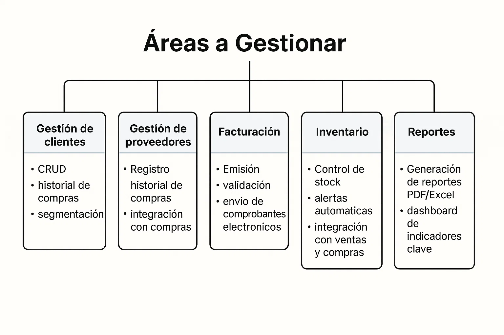
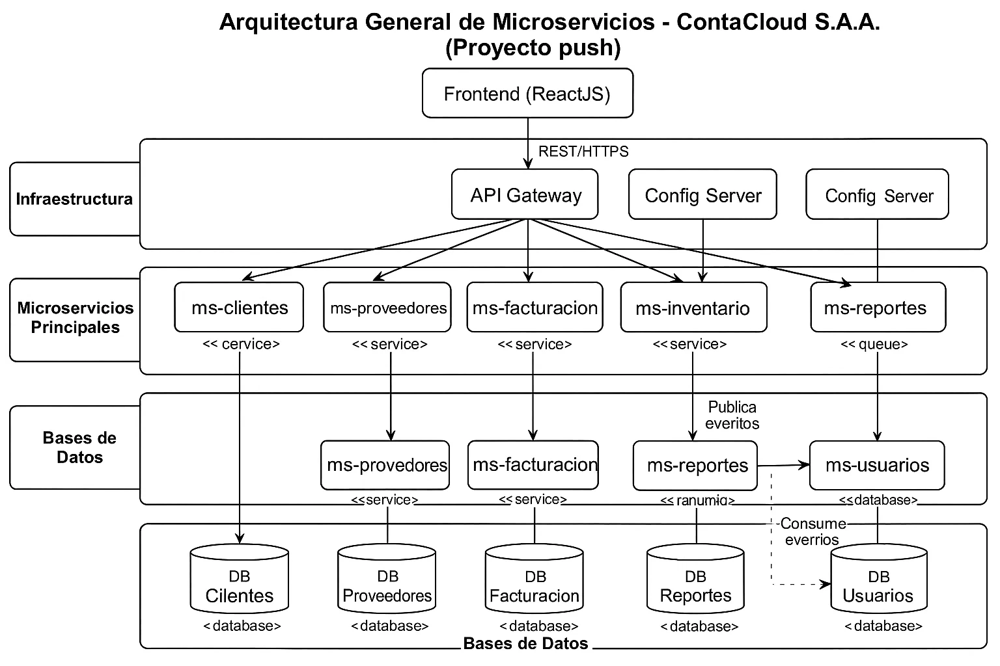
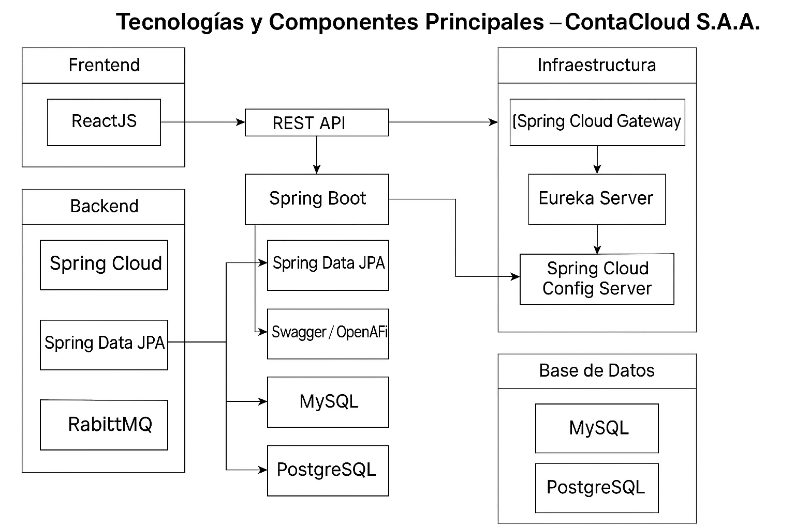
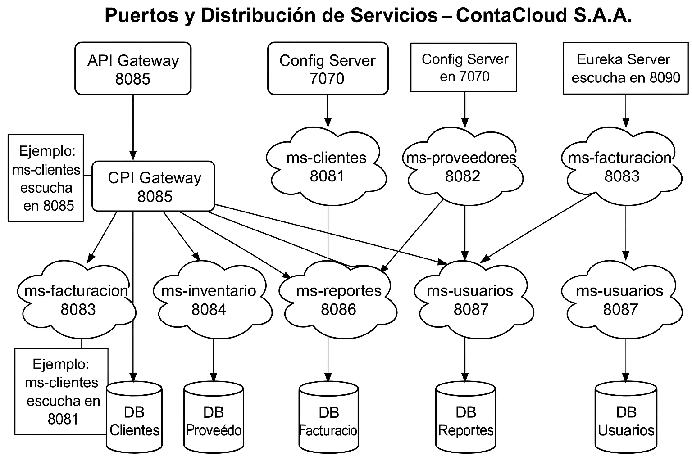
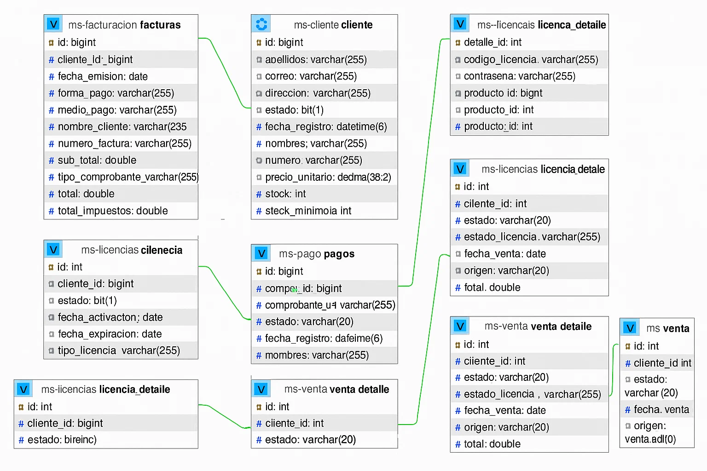
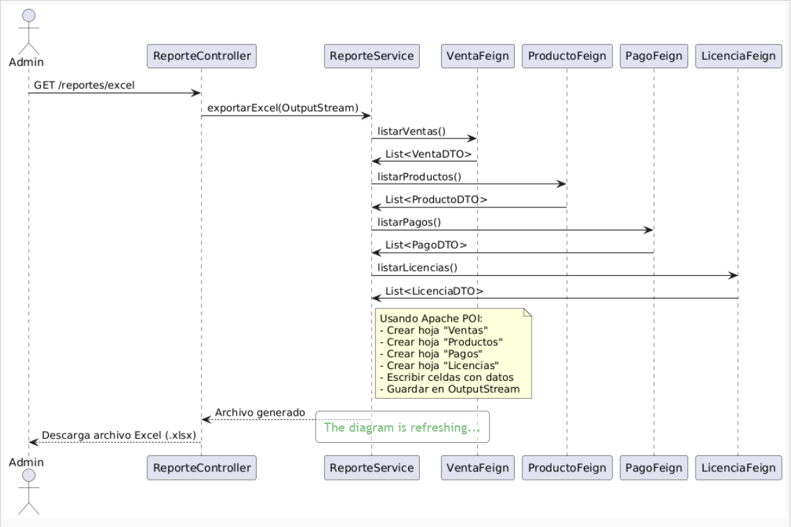
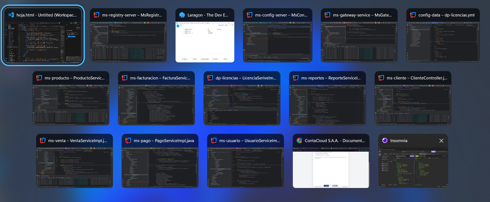

ContaCloud S.A.A. - Documentación del Proyecto
INTRODUCCIÓN
ContaCloud S.A.A. es una plataforma web integral para la gestión contable y administrativa de pequeñas y medianas empresas. El sistema permite registrar y controlar clientes, proveedores, ventas, compras, inventario y reportes financieros, todo desde una interfaz amigable y centralizada.
El proyecto está desarrollado en Java usando Spring Boot para los microservicios y ReactJS para el frontend. Cada módulo funcional (clientes, proveedores, facturación, inventario, reportes, usuarios) es un microservicio independiente que se comunica mediante REST y está protegido por autenticación JWT. La arquitectura facilita el mantenimiento, la escalabilidad y la integración futura de nuevos módulos.
- Gestión de clientes y proveedores con historial de operaciones.
- Facturación electrónica y emisión de comprobantes válidos ante SUNAT.
- Control de inventario con alertas de stock y movimientos automáticos.
- Reportes financieros y operativos exportables a PDF y Excel.
- Gestión de usuarios, roles y permisos para seguridad y trazabilidad.
El sistema utiliza bases de datos MySQL y PostgreSQL según el microservicio, y la configuración se centraliza mediante Spring Cloud Config Server. El descubrimiento de servicios se realiza con Eureka Server, permitiendo que los módulos se comuniquen de forma dinámica y tolerante a fallos. La seguridad se implementa con JWT y control de acceso por roles.
ContaCloud S.A.A. está orientado a empresas que buscan digitalizar sus procesos contables y administrativos, reducir errores manuales y mejorar la toma de decisiones mediante información en tiempo real. El sistema es accesible desde cualquier navegador moderno y está preparado para integrarse con sistemas externos mediante APIs.
- Soporte para múltiples usuarios.
- Documentación técnica y manual de usuario incluidos.
Este documento describe la arquitectura, los módulos, los requisitos funcionales y no funcionales, y los principales flujos de operación del sistema ContaCloud S.A.A., sirviendo como guía para su desarrollo, despliegue y mantenimiento.
Universidad Peruana Unión - Ingeniería de Sistemas
Página 1 de 20
ContaCloud S.A.A. - Documentación del Proyecto
1. OBJETIVO Y ALCANCE
El objetivo de ContaCloud S.A.A. es digitalizar y automatizar la gestión contable de pequeñas y medianas empresas, permitiendo:
- Registrar ventas, compras y movimientos de inventario en tiempo real.
- Emitir comprobantes electrónicos (facturas, boletas) cumpliendo con SUNAT.
- Gestionar usuarios, roles y permisos con autenticación JWT.
- Integrar módulos de clientes, proveedores, productos y reportes.
- Escalar horizontalmente cada microservicio según demanda.
Áreas a Gestionar
- • Gestión de clientes: CRUD, historial de compras, segmentación.
- • Gestión de proveedores: Registro, historial de compras, integración con compras.
- • Facturación: Emisión, validación y envío de comprobantes electrónicos.
- • Inventario: Control de stock, alertas automáticas, integración con ventas y compras.
- • Reportes: Generación de reportes PDF/Excel, dashboard de indicadores clave.
- • Seguridad: Autenticación, autorización y auditoría de acciones.

Universidad Peruana Unión - Ingeniería de Sistemas
Página 2 de 20
ContaCloud S.A.A. - Documentación del Proyecto
2. ARQUITECTURA GENERAL DEL SISTEMA

Figura 1: Arquitectura general de microservicios de ContaCloud S.A.A.
Microservicios principales:
- ms-clientes: CRUD de clientes, búsqueda y segmentación.
- ms-proveedores: CRUD de proveedores, historial de compras.
- ms-facturacion: Emisión y validación de comprobantes electrónicos.
- ms-inventario: Control de stock, movimientos y alertas.
- ms-reportes: Generación de reportes y dashboard.
- ms-usuarios: Gestión de usuarios, roles y autenticación JWT.
Infraestructura:
- API Gateway: Enrutamiento, balanceo y seguridad.
- Eureka Server: Descubrimiento de servicios.
- Config Server: Configuración centralizada vía Git.
Universidad Peruana Unión - Ingeniería de Sistemas
Página 3 de 20
ContaCloud S.A.A. - Documentación del Proyecto
3. TECNOLOGÍAS Y COMPONENTES PRINCIPALES
- • Backend: Java Spring Boot, Spring Cloud, Spring Data JPA
- • Frontend: ReactJS (o Angular/Vue según preferencia)
- • Base de datos: MySQL y PostgreSQL
- • API Gateway: Spring Cloud Gateway
- • Descubrimiento de servicios: Eureka Server
- • Configuración centralizada: Spring Cloud Config Server
- • Documentación de APIs: Swagger/OpenAPI
- • Mensajería: (Planeado) Servicio de notificaciones

Universidad Peruana Unión - Ingeniería de Sistemas
Página 4 de 20
ContaCloud S.A.A. - Documentación del Proyecto
4. REPOSITORIOS DEL PROYECTO
Universidad Peruana Unión - Ingeniería de Sistemas
Página 5 de 20
ContaCloud S.A.A. - Documentación del Proyecto
4. ARQUITECTURA GENERAL DE MICROSERVICIOS
ContaCloud S.A.A. está diseñada bajo una arquitectura de microservicios desacoplados, donde cada dominio de negocio es gestionado por un servicio independiente. Esto permite escalar, actualizar y mantener cada módulo sin afectar el resto del sistema.
- ms-clientes: CRUD de clientes, historial de compras, integración con ventas.
- ms-proveedores: Registro y gestión de proveedores, integración con compras.
- ms-facturacion: Facturación electrónica, integración SUNAT, emisión de comprobantes.
- ms-inventario: Control de stock, movimientos, alertas automáticas.
- ms-reportes: Generación de reportes PDF/Excel, dashboard de indicadores.
- ms-usuarios: Gestión de usuarios, roles, autenticación JWT/OAuth2.
Todos los microservicios se comunican a través de un API Gateway (Spring Cloud Gateway), que enruta las solicitudes y aplica políticas de seguridad. El descubrimiento de servicios se realiza mediante Eureka Server, y la configuración centralizada se gestiona con Spring Cloud Config Server.
Ejemplo de flujo:
- El usuario inicia sesión en el frontend (ReactJS), que solicita un token JWT al ms-usuarios.
- Al registrar una venta, el frontend envía la solicitud al API Gateway, que la enruta al ms-facturacion.
- ms-facturacion valida la venta, actualiza el inventario (ms-inventario) y genera el comprobante electrónico.
- ms-reportes puede consultar ventas y generar reportes en tiempo real.
Figura 2: Vista general de la arquitectura de microservicios del sistema ContaCloud S.A.A.
Universidad Peruana Unión - Ingeniería de Sistemas
Página 6 de 20
ContaCloud S.A.A. - Documentación del Proyecto
5. INFRAESTRUCTURA Y SERVICIOS DE APOYO
La infraestructura de ContaCloud S.A.A. está diseñada para alta disponibilidad y escalabilidad. Todos los servicios se ejecutan en contenedores Docker y se orquestan con Docker Compose o Kubernetes.
- API Gateway: Expone los endpoints públicos y protege los microservicios internos.
- Eureka Server: Permite que los microservicios se descubran y comuniquen dinámicamente.
- Config Server: Centraliza la configuración de todos los servicios, almacenada en un repositorio Git privado.
- Base de datos: Cada microservicio tiene su propia base de datos (MySQL o PostgreSQL) para garantizar el principio de independencia.
Ejemplo de despliegue:
- El API Gateway escucha en el puerto 8085, Eureka en el 8090 y Config Server en el 7070.
- Los microservicios se comunican usando nombres lógicos registrados en Eureka.
Seguridad y monitoreo:
- Autenticación y autorización centralizadas en ms-usuarios.
- Monitoreo con Spring Boot Actuator
Figura 3: Infraestructura y servicios principales del sistema ContaCloud S.A.A.
Universidad Peruana Unión - Ingeniería de Sistemas
Página 7 de 20
ContaCloud S.A.A. - Documentación del Proyecto
6. CONFIGURACIÓN CENTRALIZADA Y DESCUBRIMIENTO DE SERVICIOS
Todos los microservicios de ContaCloud S.A.A. obtienen su configuración desde el Config Server, que almacena archivos YAML en un repositorio Git privado. Esto permite modificar parámetros como puertos, credenciales y rutas sin necesidad de recompilar ni reiniciar los servicios.
Ejemplo de configuración YAML:
spring:
datasource:
url: jdbc:mysql://localhost:3306/clientesdb
username: user
password: pass
server:
port: 8081
Descubrimiento de servicios: Cada microservicio se registra automáticamente en Eureka al iniciar, permitiendo que otros servicios lo encuentren por nombre lógico. El API Gateway enruta las solicitudes usando estos nombres.
Ventajas:
- Despliegue flexible y tolerante a fallos.
- Actualización de configuración en caliente.
- Balanceo de carga automático entre instancias.
Figura 4: Configuración centralizada usando Spring Cloud Config Server y Eureka.
Universidad Peruana Unión - Ingeniería de Sistemas
Página 8 de 20
ContaCloud S.A.A. - Documentación del Proyecto
7. PUERTOS Y DISTRIBUCIÓN DE SERVICIOS
- • API Gateway: 8085
- • Config Server: 7070
- • Eureka Server: 8090
- • Microservicios: Puertos dinámicos o configurados por entorno
- • :
- • :

Universidad Peruana Unión - Ingeniería de Sistemas
Página 9 de 20
ContaCloud S.A.A. - Documentación del Proyecto
6. REQUERIMIENTOS FUNCIONALES
| Código |
Descripción |
Proceso de Negocio |
| RF-001 | El sistema debe permitir registrar nuevos usuarios con sus datos personales. | Gestión de Usuarios |
| RF-002 | El sistema debe autenticar usuarios mediante JWT. | Autenticación y Seguridad |
| RF-003 | El sistema debe permitir listar, registrar, actualizar y eliminar productos. | Gestión de Productos |
| RF-004 | El sistema debe emitir facturas para ventas pagadas. | Proceso de Facturación |
| RF-005 | El sistema debe generar un número único para cada factura. | Control de Facturación |
| RF-006 | El sistema debe registrar pagos con método contado o transferencia. | Registro de Pagos |
| RF-007 | El sistema debe descontar stock tras el pago de una venta. | Gestión de Inventario |
| RF-008 | El sistema debe validar que el stock sea suficiente antes de confirmar pago. | Validación de Productos |
| RF-009 | El sistema debe permitir listar ventas pendientes por cliente. | Consulta de Ventas |
| RF-010 | El sistema debe generar reportes en formato Excel con datos de ventas, pagos, etc. | Generación de Reportes |
| RF-011 | El sistema debe registrar licencias con fechas de activación y expiración. | Gestión de Licencias |
| RF-012 | El sistema debe permitir que el cliente visualice el historial de facturas. | Consulta de Facturación |
7. REQUERIMIENTOS NO FUNCIONALES
| Código |
Descripción |
Proceso de Negocio |
| RNF-001 | El sistema debe garantizar tiempos de respuesta menores a 3 segundos. | Rendimiento |
| RNF-002 | La plataforma debe estar disponible el 99.9% del tiempo. | Disponibilidad |
| RNF-003 | El acceso debe estar asegurado mediante autenticación con tokens JWT. | Seguridad |
| RNF-004 | El sistema debe permitir escalabilidad horizontal de microservicios. | Arquitectura de Microservicios |
| RNF-005 | Los servicios deben cumplir con principios REST y estar desacoplados. | Interoperabilidad |
| RNF-006 | La comunicación entre servicios debe ser segura y con timeout configurado. | Seguridad en Microservicios |
| RNF-007 | La base de datos debe soportar concurrencia sin pérdida de datos. | Integridad de Datos |
| RNF-008 | Los reportes deben generarse en menos de 5 segundos en condiciones normales. | Rendimiento |
| RNF-009 | El sistema debe ser compatible con navegadores modernos (Chrome, Firefox). | Usabilidad |
| RNF-010 | El sistema debe registrar logs de eventos importantes para auditoría. | Trazabilidad |
Universidad Peruana Unión - Ingeniería de Sistemas
Página 10 de 20
ContaCloud S.A.A. - Documentación del Proyecto
6. MÉTODOS DEL SISTEMA
| N.º |
Método |
Descripción funcional |
| 1 | Registrar ventas y transacciones | Crea ventas, valida pagos y genera facturas electrónicas integrando varios servicios. |
| 2 | Gestión de clientes y proveedores | Registra y administra datos de clientes vía auth-service y ms-cliente. |
| 3 | Procesamiento de pedidos y facturas | Toma pedidos, descuenta stock y emite facturas con datos del cliente. |
| 4 | Control de inventario y alertas | Actualiza stock automáticamente y detecta niveles críticos para alertas. |
| 5 | Generación de reportes financieros | Consolida ventas, pagos, productos y licencias en reportes Excel desde ms-reportes. |
| 6 | Gestión de usuarios y roles | Maneja autenticación JWT, roles (ADMIN, CLIENTE), y control de acceso. |
| 7 | Configuración centralizada | Usa Spring Cloud Config para manejar propiedades y entornos desde un repo central. |
Universidad Peruana Unión - Ingeniería de Sistemas
Página 11 de 20
ContaCloud S.A.A. - Documentación del Proyecto
DIAGRAMA DE BASE DE DATOS

Figura 6: Diagrama entidad-relación de la base de datos de ContaCloud S.A.A.
🧩 Descripción de la Base de Datos del Sistema ContaCloud
📦 1. ms-producto
Almacena información de los productos ofertados.
Atributos: nombre, descripcion, precio_unitario, stock, stock_minimo.
🧑💼 2. ms-cliente
Registra datos de los clientes como nombres, dirección, contacto y documento.
Entidad central para ventas, pagos y licencias.
💰 3. ms-pago
Gestiona los pagos realizados por los clientes.
Atributos: venta_id, metodo, comprobante_url, fecha_registro.
🧾 4. ms-facturacion
Administra las facturas generadas con datos fiscales completos.
Atributos: numero_factura, tipo_comprobante, total, sub_total, impuestos.
🛒 5. ms-venta
Representa las ventas efectuadas a clientes.
Atributos: estado, fecha_venta, total.
🔑 6. ms-licencias
Maneja las licencias otorgadas al cliente tras comprar productos digitales.
Campos: fecha_activacion, fecha_expiracion, tipo_licencia, estado.
📄 7. licencia_detalle
Representa qué producto fue licenciado, código y contraseña.
🧾 8. venta_detalle
Desglosa cada venta en productos individuales con cantidad, precio y subtotal.
Universidad Peruana Unión - Ingeniería de Sistemas
Página 12 de 20
ContaCloud S.A.A. - Documentación del Proyecto
DIAGRAMA DE SECUENCIA - PROCESO DE VENTA Y REPORTES


Figura 7: Diagrama de secuencia del proceso de venta.
Universidad Peruana Unión - Ingeniería de Sistemas
Página 15 de 20
ContaCloud S.A.A. - Documentación del Proyecto
9. CONCLUSIONES
ContaCloud S.A.A. es una solución moderna y escalable para la gestión contable y financiera de PyMEs, basada en microservicios y tecnologías cloud. Su arquitectura modular permite una evolución constante y una integración sencilla con nuevos servicios y tecnologías.
- • Reducción de errores y tareas manuales
- • Mejora en la toma de decisiones basada en datos
- • Seguridad y respaldo de la información
- • Facilidad de mantenimiento y escalabilidad
Este documento sirve como referencia para el desarrollo, despliegue y mejora continua del sistema ContaCloud S.A.A.

Universidad Peruana Unión - Ingeniería de Sistemas
Página 19 de 20